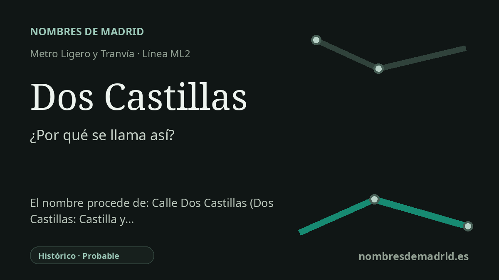

Publicado el · Investigación de Nombres de Madrid · Cómo verificamos cada origen · 7 fuentes consultadas
Respuesta rápida
Dos Castillas toma su nombre de la Vía de las Dos Castillas, en Pozuelo de Alarcón. El nombre de la vía alude probablemente a la división histórica entre Castilla la Vieja y Castilla la Nueva, con Madrid históricamente incluida en Castilla la Nueva.
La historia del nombre
Dos Castillas es un nombre de estación tomado directamente de su ubicación: la parada está en la Vía de las Dos Castillas, 11D, en Pozuelo de Alarcón. Metro Ligero Oeste describe Dos Castillas como una estación de la línea ML2 situada en una vía de nombre homónimo, y el Consorcio Regional de Transportes señala esa misma calle como acceso de la estación.
La expresión «Dos Castillas» remite de forma natural a la antigua distinción geográfica e histórica entre Castilla la Vieja y Castilla la Nueva. En ese uso, Castilla se entendía como una amplia región del centro peninsular dividida entre una Castilla septentrional, la Vieja, y otra meridional, la Nueva, no como una simple suma de las comunidades autónomas actuales que llevan el nombre de Castilla.
Madrid entra en esta historia a través de Castilla la Nueva. Las obras de referencia describen Castilla la Nueva como una región histórica del centro de España que incluía Madrid junto con Ciudad Real, Cuenca, Guadalajara y Toledo, y la relacionan con el antiguo reino musulmán de Toledo incorporado a Castilla. Fuentes geográficas del siglo XIX también mencionan la sierra de Guadarrama como una de las líneas montañosas que separaban las dos Castillas.
Por eso el nombre de la vía resulta especialmente expresivo en Pozuelo de Alarcón, al oeste de Madrid y cerca del borde metropolitano orientado hacia Guadarrama. La línea ML2 se abrió con Metro Ligero Oeste el 27 de julio de 2007 y atraviesa este corredor de campus, parques empresariales y áreas residenciales, de modo que la estación conserva un vocabulario regional antiguo dentro de un paisaje de transporte muy reciente.
La prueba más sólida es la cadena inmediata del nombre: la estación procede de la vía. La interpretación de fondo de la calle como alusión a Castilla la Vieja y Castilla la Nueva está bien apoyada históricamente, pero no consta el acuerdo municipal de Pozuelo que explique la motivación oficial del nombre. La vía probablemente evoca las dos Castillas históricas y no equivale de forma estricta a las actuales Castilla y León y Castilla-La Mancha.